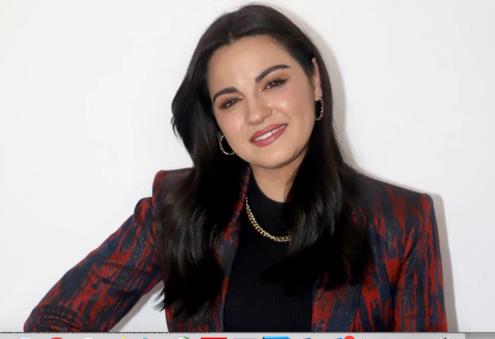
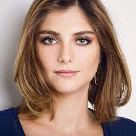
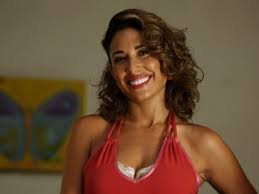
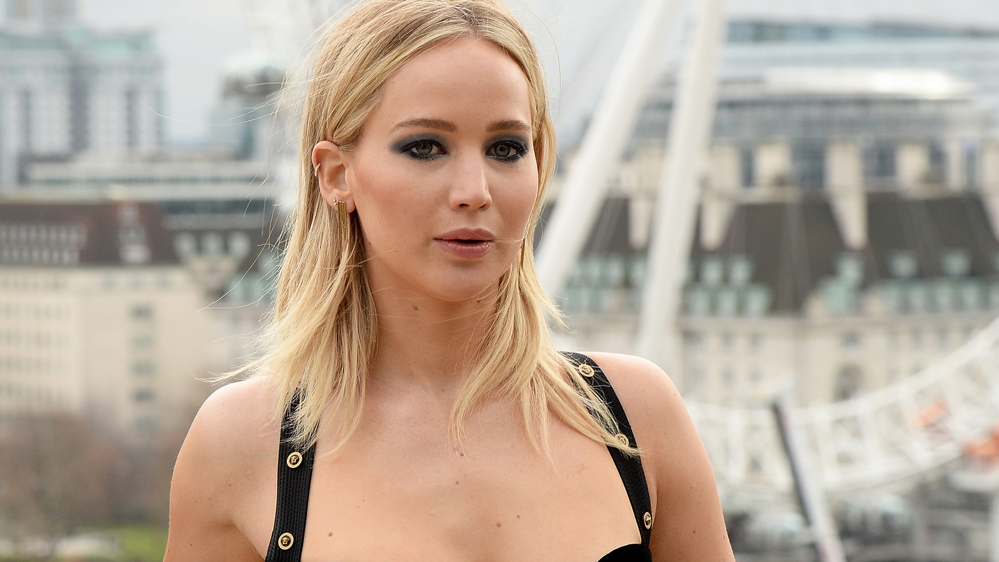
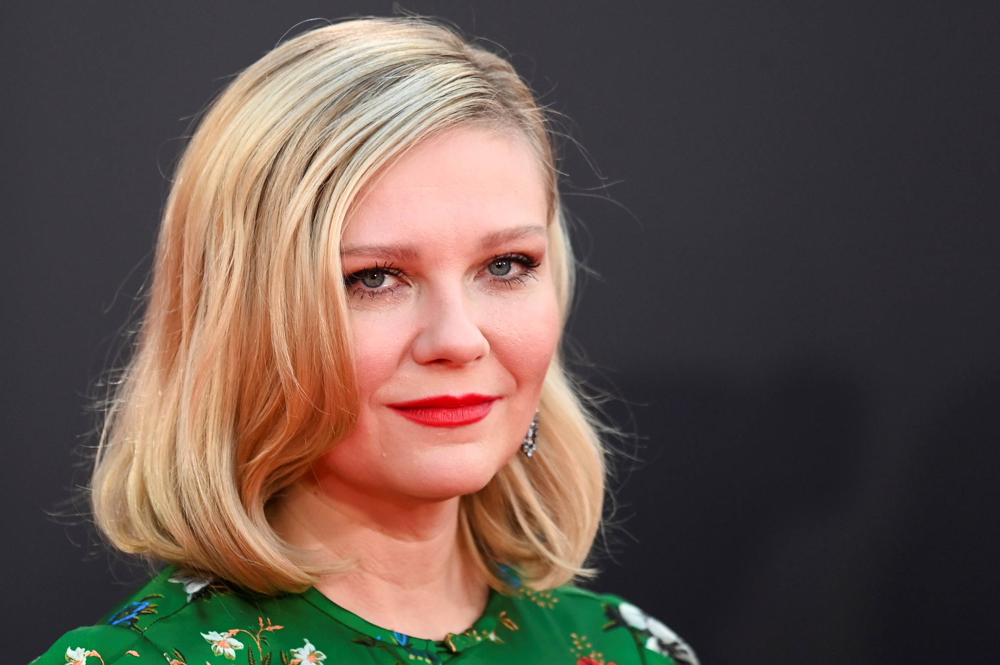

<!doctype html>
<html lang="en">
  <head>
    <meta charset="utf-8">
    <meta name="viewport" content="width=device-width, initial-scale=1">
    <title>Bootstrap demo</title>
    <link href="https://cdn.jsdelivr.net/npm/bootstrap@5.2.0-beta1/dist/css/bootstrap.min.css" rel="stylesheet" integrity="sha384-0evHe/X+R7YkIZDRvuzKMRqM+OrBnVFBL6DOitfPri4tjfHxaWutUpFmBp4vmVor" crossorigin="anonymous">
  </head>
  <body>
    <script src="https://cdn.jsdelivr.net/npm/bootstrap@5.2.0-beta1/dist/js/bootstrap.bundle.min.js" integrity="sha384-pprn3073KE6tl6bjs2QrFaJGz5/SUsLqktiwsUTF55Jfv3qYSDhgCecCxMW52nD2" crossorigin="anonymous"></script>
  </body>
  <link rel="stylesheet" href="css/estilos.css" >
</html>
<body class="">
<ul class="nav nav-tabs">
    <li class="nav-item">
      <a class="nav-link active" aria-current="page" href="#">FAMOSAS</a>
    </li>
    <li class="nav-item">
      <a class="nav-link active" href="#">GANADORES</a>
    </li>
    <li class="nav-item">
      <a class="nav-link" href="#"></a>
    </li>
    <li class="nav-item">
      <a class="nav-link disabled"></a>
    </li>
  </ul>
  <section>
    <div class="container">
        <div class="row">
        <div class="col-12 col-sm-12 col-md-6 col-Ig-6 col-xl-6 bg-primary">
                   <p></p>
                   <h4>1. MAITE PERRONI BEORLEGUI</h4>
                   
                   <p></p>
                   <p>Cantante y actriz mexicana.​ Saltó a la fama en 2004 con su personaje como Lupita Fernández en la telenovela juvenil mexicana Rebelde y como una de las integrantes del grupo RBD.</p>
        </div>
        <div class="col-12 col-sm-12 col-md-6 col-Ig-6 col-xl-6 bg-success">
                   <p>
                   <h4>2. TAMMY DI CALAFIORI</h4>
                   
                   </p>
                   <p>Actriz y presentadora de televisión brasileña. Ella ha jugado el papel principal en la telenovela Ciranda de Pedra.</p>
        </div>
        <div class="col-12 col-sm-12 col-md-6 col-Ig-6 col-xl-6 bg-danger">
                   <p>
                   <h4>3. GISELLE ITIÉ RAMOS</h4>
                   
                   </p>
                   <p>Actriz mexicana, nacionalizada brasileña.</p>
        </div>
        <div class="col-12 col-sm-12 col-md-6 col-Ig-6 col-xl-6 bg-warning">
                  <p>
                   <h4>4. SCARLETT INGRID JOHANSSON </h4>
                   
                   </p>
                   <P>Actriz, cantante, directora, productora y empresaria estadounidense. Comenzó a mostrar intereses en la actuación desde temprana edad, y a lo largo de su infancia y adolescencia se formó en distintos institutos como actriz.</P>
        </div>
        <div class="col-12 col-sm-12 col-md-6 col-Ig-6 col-xl-6 bg-info">
                   <p>
                   <h4>5. EMILY JEAN STONE</h4>
                   
                   </p>
                   <P>Actriz estadounidense. También ha incursionado en la producción cinematográfica. Ha recibido numerosos premios, entre ellos un Óscar, un BAFTA, un SAG y un Globo de Oro a mejor actriz, por su interpretación en la cinta La La Land.​</P>
        </div>
        <div class="col-12 col-sm-12 col-md-6 col-Ig-6 col-xl-6 bg-primary">
                   <p>
                   <h4>6. JENNIFER SHRADER LAWRENCE</h4>
                   
                   </p>
                   <p>Actriz estadounidense. También ha incursionado en la producción cinematográfica. Su carrera comenzó con trabajos ocasionales en televisión, hasta que consiguió uno de los papeles principales en la serie The Bill Engvall Show.</p>
        </div>
        <div class="col-12 col-sm-12 col-md-6 col-Ig-6 col-xl-6 bg-danger">
                   <p>
                   <h4>7. KIRSTEN CAROLINE DUNTS</h4>
                   
                   </p>
                   <p> Actriz estadounidense-alemana. También ha realizado incursiones como cantante, modelo y productora de cine.​ Debutó en el medio cinematográfico con Oedipus Wrecks, un cortometraje de Woody Allen perteneciente a la antología cinematográfica Historias de Nueva York</p>
        </div>
        <div class="col-12 col-sm-12 col-md-6 col-Ig-6 col-xl-6 bg-warning">
                   <p>
                   <h4>8. KATE ELIZABETH WINLEST</h4>
                   
                   </p>
                   <p>Actriz británica de cine, televisión y teatro. Ha trabajado mayoritariamente en películas independientes, particularmente en dramas de época, y suele interpretar personajes complejos.</p>
        </div>
    </div>
    <div class="dropdown">
      <a class="btn btn-primary" href="index.html" role="button">Volver</a>
    </div>
</section>
</body>